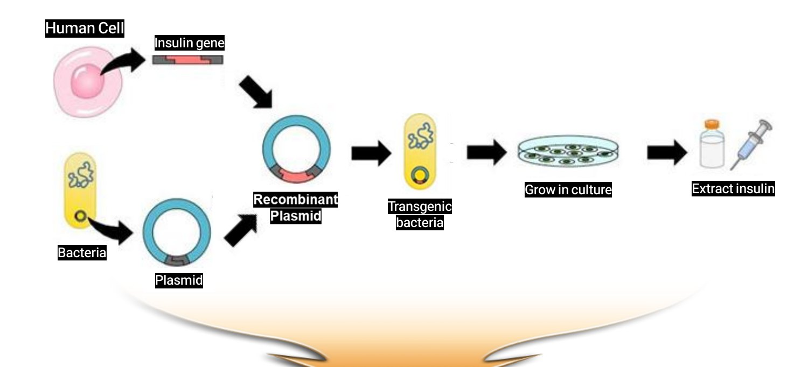
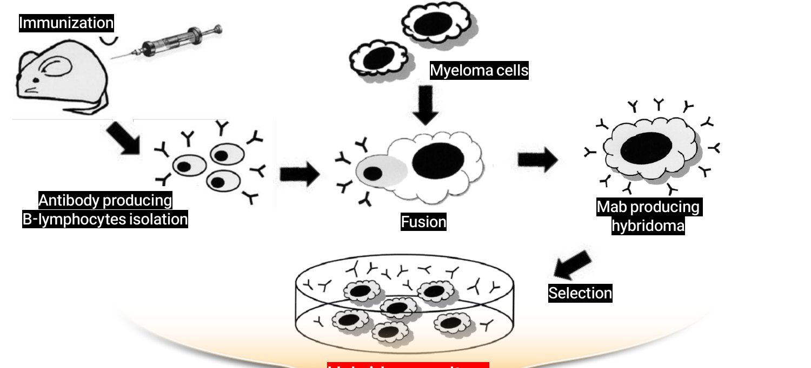
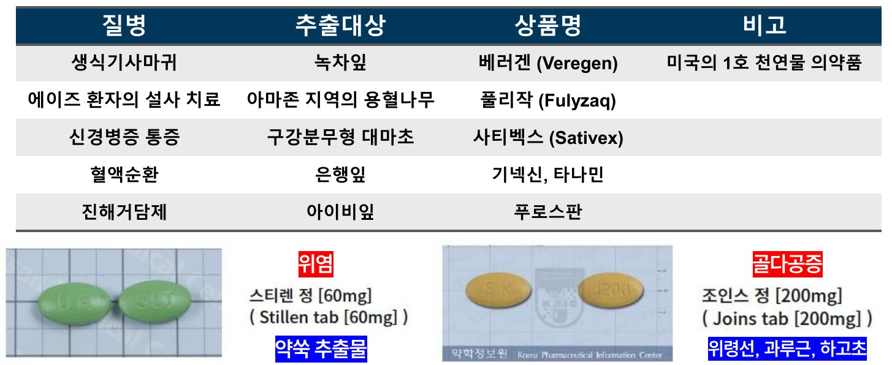
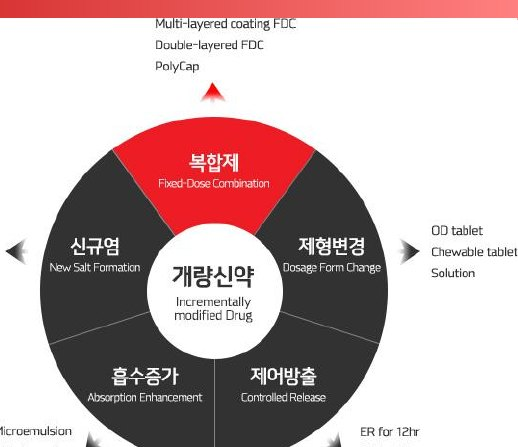

| 분류 | 무엇으로 | 대표 | 복제/개량 버전 |
|---|---|---|---|
| 합성신약 (NME) | 유기합성 저분자 | 글리벡, 아스피린 | 제네릭 / 개량신약 |
| 바이오신약 | 살아있는 세포·생명공학 | 엔브렐, 허셉틴 | 바이오시밀러 / 바이오베터 |
| 천연물신약 | 동식물·광물·미생물 추출 | 스티렌, 조인스 | — |
| 개량신약 (IMD) | 기존 약을 약간 변형 | 아모디핀, 아모잘탄 | — |
| 제네릭 | 특허 만료 후 동일 복제 | 노코틴(챔픽스) | — |
| 주제 | 정답 포인트 (교수님 해설) |
|---|---|
| 천연물신약 | 위령선·괄루근·하고초 골관절염 = 조인스정 (프로스판 ✗) 스티렌·조인스 두 개는 “꼭 기억” · 프로스판 = 아이비엽 진해거담 |
| 천연물 임상 | 천연물신약도 합성신약과 동일하게 엄격한 임상 |
| 개량신약 예 | 용도 변경 · API 변경 · 용량 변화 · 복합요법 · 새 인구집단 → 모두 신약 임상 의무 없는 건 제네릭뿐 |
| 바이오 세대 | 1세대 단순 단백질 → 2세대 항체 → 3세대 세포·유전자 |
| 핵심기술 | 유전자재조합 · 하이브리도마 (단답) |
| 약어·제네릭 | IMD · API 풀네임 / 제네릭 = 생물학적 동등성 시험 |
| 서술 | 서방정 = 천천히 용출 / 장용정 = 장에서 용출 (“제형 차이” ✗) |
| 세대 | 특징 | 언제 쓰나 |
|---|---|---|
| 1세대 세포독성 | 빨리 분열하는 세포 무차별 공격 · 싸고 경험 많음 · 부작용 많음 | 1차(first-line)로 가장 흔히 |
| 2세대 표적 | 특정 유전자 변이 겨냥 · 강력·신속 · 내성 빠름 | 보통 2차 이후 (바이오마커+ → 초치료) |
| 3세대 면역 | 면역 활성화 · 장기 효과 · 반응률 <30% · 자가면역 부작용 | 2차 이상 (폐암·흑색종은 1차 병용 확대) |
| 4세대 세포치료 | CAR-T 등 맞춤형 · 극적 반응 · 사이토카인 폭풍 | 재발·불응의 마지막 카드 |
| 임상 단계 효능 입증 실패 | 약 90% |
| 30대 제약사 신약 1개 개발비 (실패 포함) | 평균 48억 달러 ≈ 6.4조 |
| 임상 3상만 (중간값) | 251억 (570억~3.84조) |
| 신약 1개당 R&D 최다 (아스트라제네카) | 117억$ ≈ 15.5조 |
| 위고비 2023 상반기 매출 | ≈ 1.3조 (노보 반기 21조, +30%) |
| 단품메뉴 | 뷔페 | |
|---|---|---|
| 선택지 | 6개 | 수십~수백 개 |
| 고르는 속도 | 빠름 | 느림 |
| 먹는 속도 | 일정 | 배는 하나 → 다 못 먹음 |
| 신약개발 | 과거: 후보 적음 | 현재: HTS·오믹스로 후보 과잉 |
| 기준 | 분류 | 예 |
|---|---|---|
| 형태 | API(원료의약품) vs 완제의약품 | 흰 가루 vs 정제·주사 |
| 처방 | ETC(전문) vs OTC(일반, Over The Counter) | 아루센백주 vs 타이레놀정 |
| 새로움 | 신약 · 제네릭 · 개량신약 | 타이레놀 · 복제품 · 서방정 |
| 한국 약사법 (2조 8호) | 미국 FDA (NDA) | |
|---|---|---|
| 신약 범위 | 신물질만 (좁음) | 새 용량·결합·제형·적응증·용법·인구집단·Rx→OTC까지 (넓음) |
| 진짜 새 물질 | 신약 | Type 1 NME |
| 새 제형·복합 | 개량신약 / 자료제출 | Type 2~5 |
| 새 적응증 | 개량신약(다목) | Type 6 · 10 |
| 보기 | 무엇이 바뀌었나 |
|---|---|
| 아스피린 소염 → 항응고·항혈전 | 용도(적응증) 변경 |
| 아세트아미노펜 대체 소염제로 이부프로펜 | API 자체가 달라짐 → 신약 |
| OTC → 처방용 고용량 타이레놀 | 용량 변화 |
| combination therapy | 결합(복합) |
| 노인·어린이용 | 새로운 인구집단 |


| 저분자 합성 | 1세대 바이오 | 2세대 바이오 | 3세대(차세대) | |
|---|---|---|---|---|
| 예 | 아스피린 | 인슐린·성장호르몬·인터페론 | 항체·융합단백질 | 세포·유전자 치료제, RNA |
| 분자량 | 180 | 6,000 · 18,500 | 150,000 | 150,000 |
| 투여 | 경구 | 주사 | 주사 | 주사 |
| 연 치료비 | $8~16 | $24,000 | $20,000~100,000 | |
| 합성의약품 | 바이오의약품 | |
|---|---|---|
| 제조 | 화학 합성 | 살아있는 세포에서 생산 |
| 구조 | 단순, 잘 정의됨 | 복잡·이질적, 공정이 곧 제품 |
| 안정성 | 대부분 안정 | 외부 조건에 민감 (콜드체인) |
| 변형 | 잘 정의됨 | 선택지 많음 (PEG화 등) |
| 효과 | 예측 가능 | 규명 안 된·개인화된 기전 |
| 안전성 | 약물·기전 특이적 | 면역 거부(면역원성), 종양 |

| 제품 | 회사 | 적응증 | 성분 | 허가 |
|---|---|---|---|---|
| 조인스정 | SK케미칼 | 골관절(염)증 | 위령선·괄루근·하고초 | 2001 (1호) |
| 스티렌정 | 동아제약 | 위염 | 애엽(약쑥) | 2002 |
| 아피톡신주 | 구주제약 | 골관절염 | 봉독 | 2003 |
| 신바로캡슐 | 녹십자 | 골관절증 | 구척 등 | 2011 |
| 시네츄라시럽 | 안국약품 | 기관지염 | 아이비엽·황련 | 2011 |
| 모티리톤정 | 동아제약 | 기능성소화불량 | 견우자·현호색 | 2011 |
| 레일라정 | 한국피엠지 | 골관절증 | 당귀 등 | 2012 |
| 건강기능식품 | 천연물신약 | |
|---|---|---|
| 지위 | 식품 | 의약품 |
| 표시 | 기능성 (“도움”) | 질병 치료·예방 효능 |
| 근거 | 인체적용시험 | 전임상 + 임상 1·2·3상 (스티렌 3상) |
| 합성의약품 | 바이오의약품 | 공통 의미 |
|---|---|---|
| 오리지널 신약 | Biologic | 최초 개발 |
| 제네릭 | Biosimilar | 복제 (동등/유사) |
| 개량신약 (IMD) | Biobetter | 의도적 개선 |
| 목 | 바꾼 것 | 예 |
|---|---|---|
| 가 | 유효성분 종류·배합비율 (복합제) | 아모잘탄 |
| 나 | 투여경로 | 주사 → 경구 |
| 다 | 효능·효과 추가 | 새 적응증 |
| 라 | 새로운 염·이성체 | 아모디핀 |
| 마 | 제제개선: 제형·함량·용법 | 1일 2회 → 1회 서방정 |

| 방향 | 좋아지는 것 / 예 |
|---|---|
| 복합제 FDC | 복약순응도 — 아모잘탄 |
| 신규염 | 용해도·안정성·특허회피 — 아모디핀 |
| 제형변경 | OD정·츄어블·액제 (노인·소아) |
| 흡수증가 | 마이크로에멀전·고체분산 |
| 제어방출 | 12h·24h, IR+ER 이중방출 |
| 분류 | 내용 |
|---|---|
| 물질변형 | 신규염 · 프로드럭 · 이성질체(라세미 → 단일) · 다형체 · 대사체 |
| 신규제제/제형 | 서방·속방 · 함량 · 용법(1일 3회 → 1회) · 경로 (부형제만 다르면 제외) |
| 신규용도 | 새 적응증 → 임상 필요 · 미국 3년 독점 |
| 신규 복합제 | 2개 이상 성분 한 알 |
| 기타 | Rx → OTC · 새 생산방법 |
| 서방정 (SR) | 장용정 (EC) | |
|---|---|---|
| 무엇을 조절 | 방출 속도·시간 → 천천히 오래 | 방출 장소 → 위에선 안 녹고 장에서 |
| 원리 | 특수 설계로 서서히 방출 | 코팅이 산성(위)에선 안 녹고 중성(장)에서 녹음 |
| 복용 주의 | 쪼개거나 씹지 말 것 (과량 흡수) | 우유·제산제와 함께 X (위에서 녹아버림) |
| 예 | 1일 1회 서방정 | 아스피린 장용정 100mg (위 자극 ↓) |
| # | 답 | 한 줄 해설 |
|---|---|---|
| 1 | O | 바이오마커(+)는 예외 |
| 2 | O | 1~10 nm |
| 3 | X | Type 1 = NME (제형은 Type 3) |
| 4 | O | 일반의약품 |
| 5 | O | 1763 에드워드 스톤 |
| 6 | O | 일라이 릴리, 최초 재조합 |
| 7 | X | TNF-α (휴미라) |
| 8 | O | 2001 SK케미칼 |
| 9 | O | 임상도 동일하게 엄격 |
| 10 | O | 60% |
| 11 | O | 2024 |
| 12 | X | 2024 서방 = 천천히, 장용 = 장 |